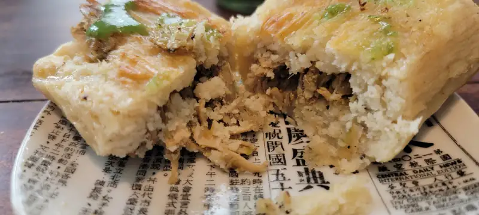

Tamal De La Esperanza
{kind=link}

{kind=link}
Tenemos la fortuna de que abrieron una panadería mexicana aquí cerca de la casa y desde la primer tanda que creo que era todavía experimental, el pan está buenísimo y las (varias) otras cosas que han puesto a la venta en su local han sido creativas y todo un éxito con la clientela. Y si, debo admitir que nos resulta chistoso ver y escuchar gringos comprando pan mexicano, pero a final de cuentas les gusta y eso m'as que risa, causa felicidad y orgullo de que los productos mexicanos bien hechos sean de gusto universal.
Y bueno pues, los tamales... no todos los experimentos son exitosos, es una realidad que debemos aceptar. Antes que nada, debo aclarar que cuando los probé ya estaba viejo y fue recalentado después de 2 días en el refri, pero pues, digamos que fue algo como prueba de fuego, como el "buen pan" que se debe mantener una semana sin problemas. Y no es que uno sea todo un experto+erudito de la cocina mexicana y mucho, mucho menos del arte de hacer tamales, pero puedo comparar con los que he probado y se que me gustan. De lo poco que entiendo de la elaboración, diría que a la masa le falta mas manteca y un poco de sal. Si no recuerdo mal de cuando hacían en la casa, era como entre 30 y 50% manteca. La carne estaba bien buena, un poco seca porque pues... refri, pero bien sazonada. Y si te preguntas cómo los preferiría? pues como los de Ensenada, claro! de carne deshebrada, con salsa de chile colorado, aceitunas negras, una tira de papa, una raja de chile california, y si los hacía mi abuelita, lo m'as controversial: pasas ! no muchas, nom'as una que otra para hacer contraste. Y por supuesto, la masa iría pintada con la salsa del relleno.